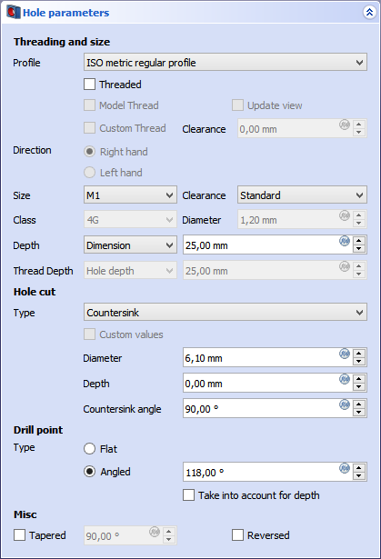

PartDesign Hole/ro
This documentation is not finished. Please help and contribute documentation.
GuiCommand model explains how commands should be documented. Browse Category:UnfinishedDocu to see more incomplete pages like this one. See Category:Command Reference for all commands.
See WikiPages to learn about editing the wiki pages, and go to Help FreeCAD to learn about other ways in which you can contribute.
|
|
| Menu location |
|---|
| Part Design → Hole |
| Workbenches |
| PartDesign |
| Default shortcut |
| None |
| Introduced in version |
| - |
| See also |
| PartDesign Pocket |
Descriere
Instrumentul Hole găurește una sau mai multe găuri dintr-o schiță selectată. Pot fi setați mai mulți parametri, cum ar fi filetarea și mărimea, potrivirea, tipul orificiilor (locaș cap de șurub conic, cilindric, gaură dreaptă) și multe altele.
The centers of the circles and arcs are used to position the holes, but please note that their radii are not taken into account. The generated holes will be identical even if the radii vary.
{kind=link}
Countersunk (to the left) and counterbored (to the right) holes cross section.
Cum se folosește
- Apăsați butonul Hole .
- If an existing unused sketch is found, it will be automatically be used. If more than one sketch is found, a Select feature panel appears to make a selection. Alternatively, a sketch can be selected before launching the Hole command.
- Define the Hole parameters. See Options.
- Apăsați tasta OK.
{kind=link}
Opţiuni
{kind=link}

Depending on which selection is made, some fields will activate or stay disabled.
- Profile: if set to None, no threading info is defined. ISO and UTS thread profiles enable the Direction, Size, Fit and Class fields.
- Threaded: check will add threading data to the Hole feature and the hole minor diameter is used. If left unchecked, the hole is considered non-threaded, and the nominal major diameter with defined Fit is chosen.
- Direction: sets the thread direction (Right Hand or Left hand) if Threaded is checked.
- Size: Sets the thread size. Requires Profile to be set to one of the ISO or UTS profiles.
- Fit: defines standard or close fit for threaded profiles.
- Class: defines the tolerance class.
- Diameter: defines the hole diameter if the Profile was set to None.
- Depth: depth of the hole from the sketch plane. Dimension enables a field to type a value. Through All will cut the hole through the whole Body.
Găurirea
- Type: sets type of hole cut: None is a straight hole; other types are Counterbore, Countersink, Cheesehead, Countersink socket screw and Cap screw.
- Diameter: sets the major diameter for all hole cut types except None. Value is non-editable if a thread profile was selected in Profile.
- Depth: depth of the hole cut type from the sketch plane. Value is non-editable if a thread profile was selected in Profile.
- Countersink angle: angle of the conical hole cut. Value is non-editable if a thread profile was selected in Profile.
Drill point
- Type: definește capătul orificiului dacă "Adâncimea" este setată la "Dimensiunea". Flat produce un fund plat; Unghiul stabilește un capăt conic.
Diverse
- Tapered: sets a taper angle to the hole. Value is calculated from the sketch plane normal. 90 degrees sets a straight hole. A value under 90 generates a smaller hole radius at the bottom; a value over 90 enlarges the hole radius at the bottom.
Proprietăți
Much of the Data properties are the same as those shown in Options.
- DateLabel: name given to the object, this name can be changed at convenience.
- DateReversed: true or false. Reverses extrusion direction.
- DateRefine: true or false. If set to true, cleans the solid from residual edges left by features. See Part RefineShape for more details.
Limite
- The selected sketch must contain one or more circle(s). The radius of the circle(s) inside the sketch is not taken into account. The generated holes will be identical even if the circles in the sketch have varying radii.
- By default, the hole feature extrudes below the sketch plane. If the solid lies on the XY_Plane, and the hole sketch is attached to the XY_Plane, it will try to extrude away from the solid and seemingly produce no result. In such a case, the Reversed property needs to be manually set to true; otherwise the sketch needs to be mapped to the bottom face of the solid.
Cut Type Definitions
Cut types (screw-types) are defined in json files. There is a set of files distributed with FreeCAD, but users can create their own definitions. Files are searched in <UserAppDataDir>/PartDesign/Hole. The UserAppDataDir can be found by typing App.getUserAppDataDir() in the Python Console.
The file should contain:
- name: The name of the definition. This must be unique as it will be used as identifier in the FreeCAD UI and as internal index.
- cut_type: Either
countersinkorcounterbore. - thread_type: Either
metricormetricfine. - angle: The angle of a countersink (not necessary for counterbore).
- data: A list of sizes, consisting of:
- thread: Name of thread known to FreeCAD.
- diameter: The diameter of the cut.
- depth: Depth of the counterbore (not necessary for countersink).
Example:
{
"name": "DIN 7984",
"cut_type": "counterbore",
"thread_type": "metric",
"data": [
{ "thread": "M2", "diameter": 4.3, "depth": 1.6 },
{ "thread": "M2.5", "diameter": 5.0, "depth": 2.0 },
…
]
}
- Helper tools: New Body, New Sketch, Attach Sketch, Edit Sketch, Validate Sketch, Check Geometry, Sub-Shape Binder, Clone
- Modeling tools:
- Additive tools: Pad, Revolution, Additive Loft, Additive Pipe, Additive Helix, Additive Box, Additive Cylinder, Additive Sphere, Additive Cone, Additive Ellipsoid, Additive Torus, Additive Prism, Additive Wedge
- Subtractive tools: Pocket, Hole, Groove, Subtractive Loft, Subtractive Pipe, Subtractive Helix, Subtractive Box, Subtractive Cylinder, Subtractive Sphere, Subtractive Cone, Subtractive Ellipsoid, Subtractive Torus, Subtractive Prism, Subtractive Wedge
- Boolean: Boolean Operation
- Dress-up tools: Fillet, Chamfer, Draft, Thickness
- Transformation tools: Mirror, Linear Pattern, Polar Pattern, Multi-Transform, Scale
- Additional tools: Shape Binder, Involute Gear, Sprocket, Shaft Design Wizard
- Context menu: Suppressed, Set Tip, Move Object To…, Move Feature After…
- Preferences: Preferences, Fine tuning
- Getting started
- Installation: Download, Windows, Linux, Mac, Additional components, Docker, AppImage, Ubuntu Snap
- Basics: About FreeCAD, Interface, Mouse navigation, Selection methods, Object name, Preferences, Workbenches, Document structure, Properties, Help FreeCAD, Donate
- Help: Tutorials, Video tutorials
- Workbenches: Std Base, Assembly, BIM, CAM, Draft, FEM, Inspection, Material, Mesh, OpenSCAD, Part, PartDesign, Points, Reverse Engineering, Robot, Sketcher, Spreadsheet, Surface, TechDraw, Test Framework
- Hubs: User hub, Power users hub, Developer hub